camp · the target, not graded
Telos art board
Every picture the app shows, at the size it is shown, on the app's own colours.
The test is whether it reads as one world drawn by one hand. Built by
docs/design/art-board/build.py; code-drawn art is rendered by
render_board_test.dart beside it. Spoilers sit behind reveals.
1 · Measured against the style lock
Paper and ink are sampled from each image (the lightest 10% and darkest 1% of
pixels) and compared with the lock's swatches: paper
#E8E1CE,
ink #20251F.
ΔE is the colour distance: under about 2 is invisible, past
8 for paper or 12 for ink is flagged in red. Ink cover is how much
of the image is on the dark side, a proxy for hatching density. Warm colour is the share
of clearly ochre-to-amber pixels; the lock allows a tiny accent.
By set
| Set | Images | Mean paper | Paper ΔE range | Mean ink cover | Mean warm colour |
|---|---|---|---|---|---|
| Camp & story | 4 | #E5D7B6 | 7.1 to 17.9 | 43% | 17.3% |
| Sector headers | 5 | #DDD1B6 | 6.9 to 7.6 | 44% | 7.1% |
| Salvage plates | 25 | #E6DCC4 | 2.0 to 4.8 | 13% | 2.6% |
Every image
| Image | Set | Paper | ΔE to lock | Ink | ΔE to lock | Ink cover | Warm colour |
|---|---|---|---|---|---|---|---|
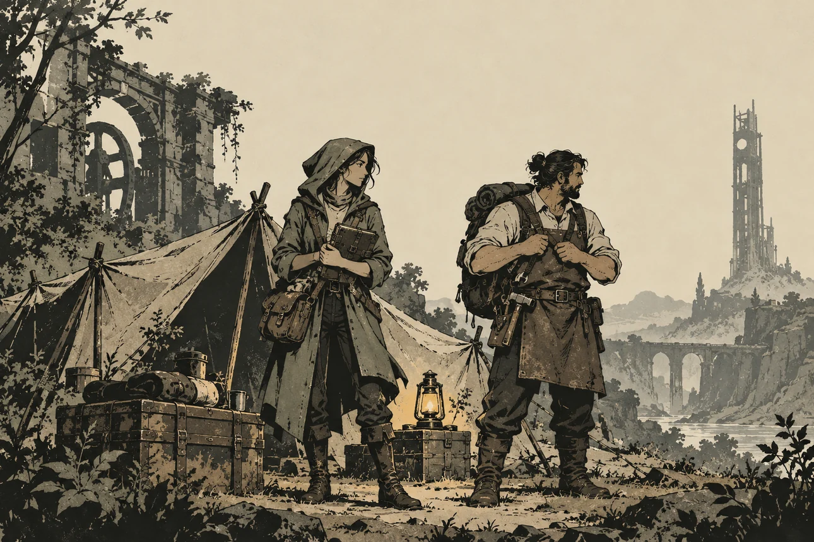 camp | Camp & story | #DFD2B7 | 7.1 | #13120C | 9.1 | 47% | 11.1% |
| lantern | Camp & story | #FBE7B3 | 17.9 | #000000 | 14.8 | 48% | 46.7% |
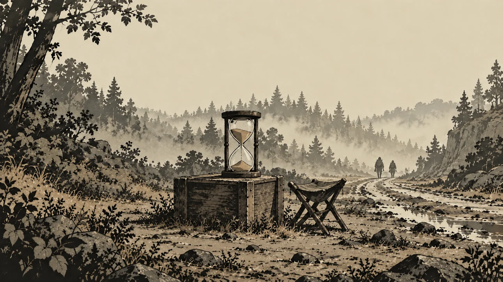 onboarding-hourglass | Camp & story | #DDD1B6 | 7.3 | #090603 | 13.0 | 37% | 11.3% |
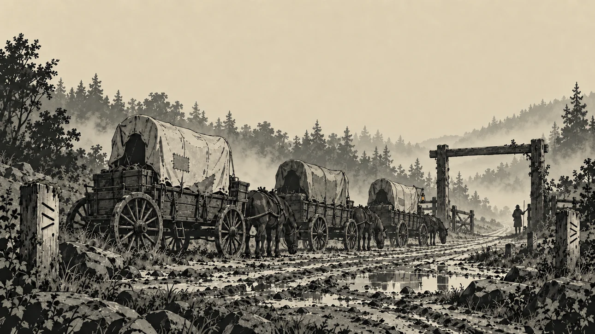 caravan | Camp & story | #DED1B6 | 7.3 | #050302 | 14.0 | 39% | 0.0% |
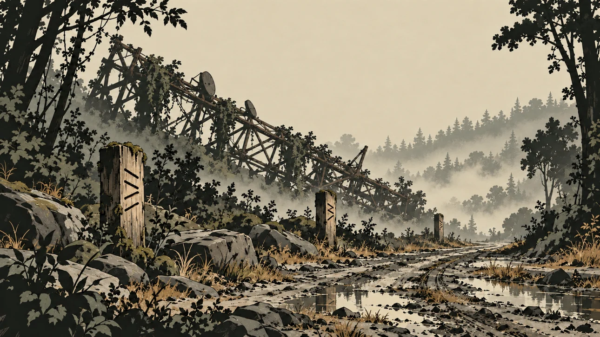 mosswood | Sector headers | #DDD1B6 | 7.3 | #050301 | 13.9 | 47% | 8.5% |
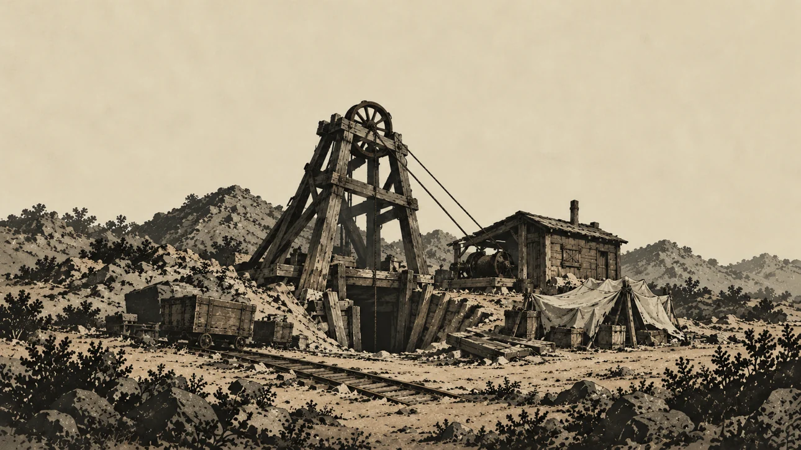 blackstone | Sector headers | #DDD2B6 | 7.3 | #0E0A06 | 12.0 | 36% | 11.1% |
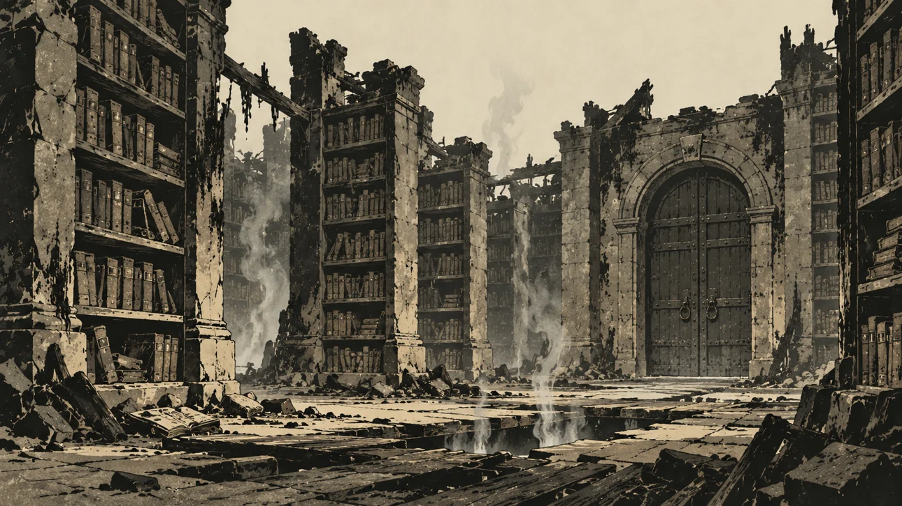 cinder | Sector headers | #DED2B7 | 7.0 | #11100B | 9.9 | 69% | 10.0% |
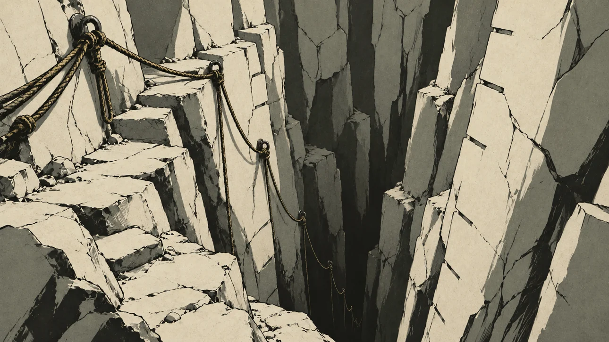 riftline | Sector headers | #DDD1B5 | 7.6 | #14110A | 9.6 | 52% | 1.3% |
| spire (spoiler) | Sector headers | #DDD1B7 | 6.9 | #1C1A13 | 6.0 | 16% | 4.7% |
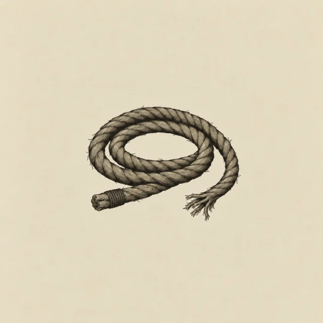 scav_cord | Salvage plates | #E6DCC4 | 3.3 | #251F15 | 6.9 | 6% | 1.6% |
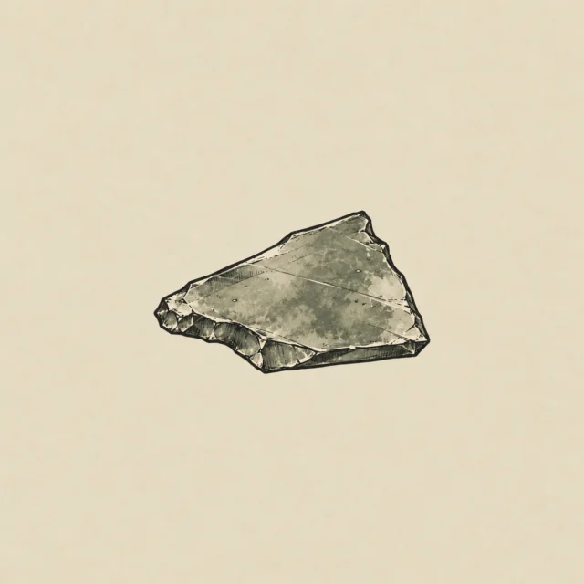 mossglass | Salvage plates | #E5DCC3 | 3.7 | #333025 | 7.8 | 4% | 0.1% |
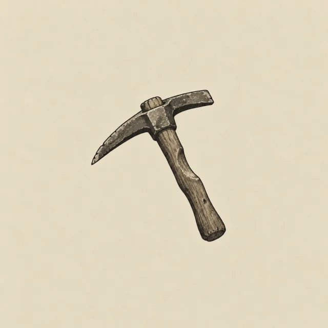 hollow_pick | Salvage plates | #E5DCC4 | 3.3 | #2F281E | 7.3 | 4% | 1.0% |
| ash_ledger | Salvage plates | #E8DEC6 | 3.0 | #1A1309 | 9.7 | 13% | 8.9% |
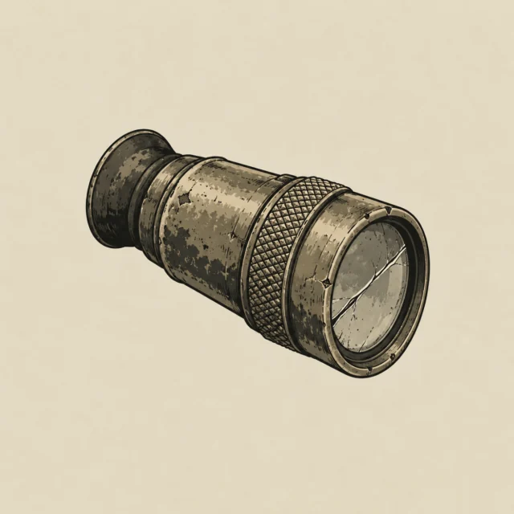 field_optic | Salvage plates | #E3DAC2 | 3.7 | #19160E | 7.8 | 14% | 4.1% |
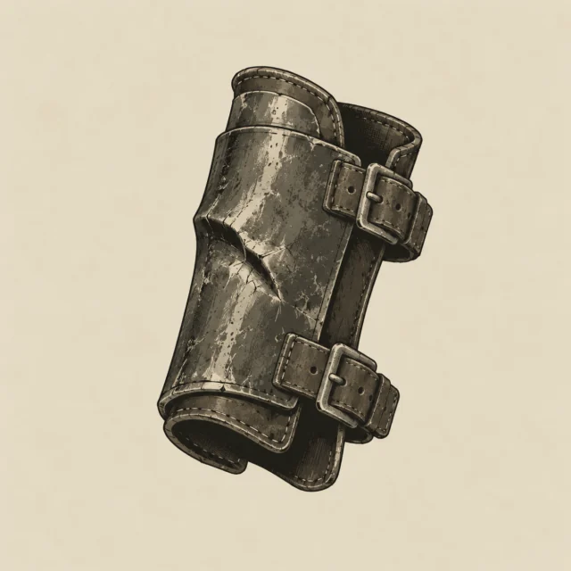 slag_brace | Salvage plates | #E4DBC4 | 3.1 | #1F1B13 | 6.4 | 21% | 2.8% |
| archivist_optic | Salvage plates | #E8DEC5 | 3.5 | #252118 | 5.3 | 7% | 1.8% |
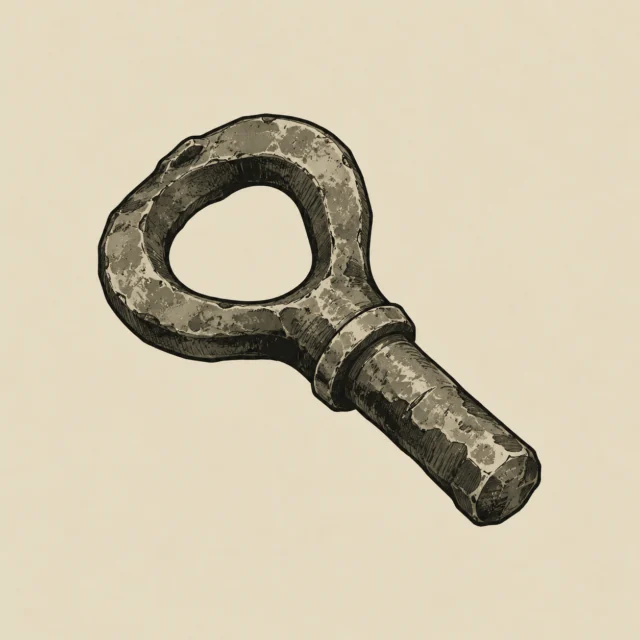 rift_anchor | Salvage plates | #E4DBC3 | 3.5 | #17140D | 8.5 | 12% | 1.4% |
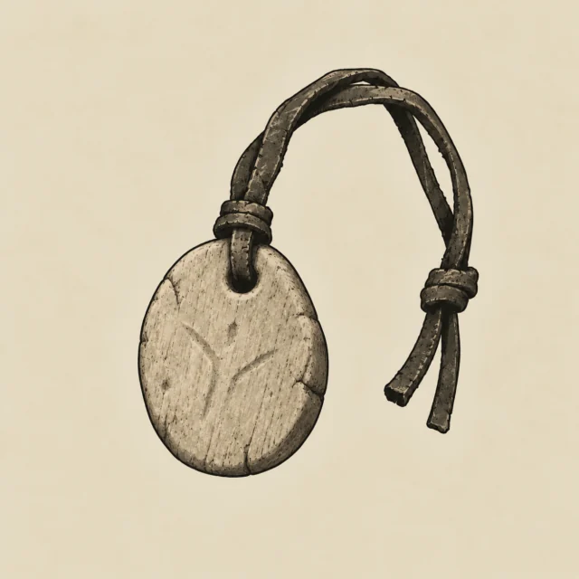 verge_charm | Salvage plates | #E5DBC4 | 3.1 | #1B160D | 8.3 | 9% | 2.6% |
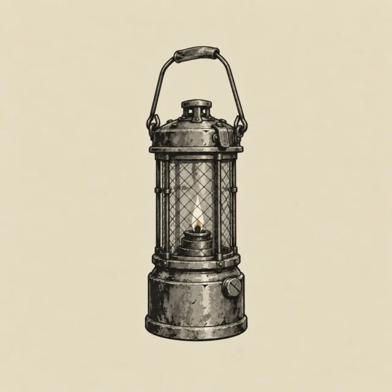 deep_lamp | Salvage plates | #E5DCC4 | 3.3 | #1A170F | 7.4 | 9% | 0.1% |
| cinder_key | Salvage plates | #E4DBC3 | 3.5 | #1E1A14 | 6.5 | 10% | 0.8% |
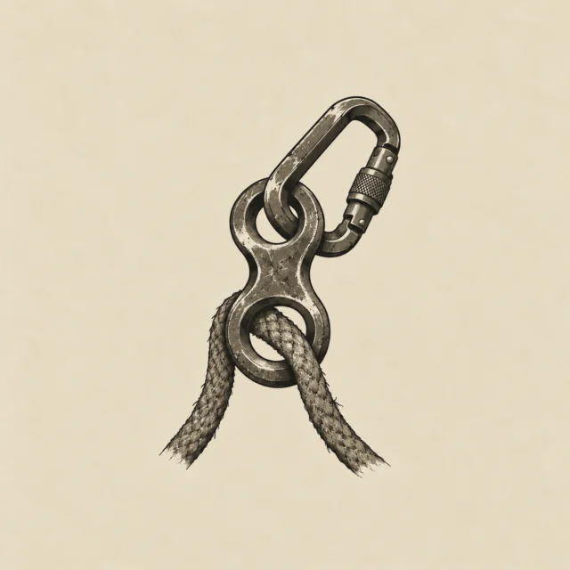 descent_rig | Salvage plates | #E7DCC4 | 3.4 | #231F16 | 5.6 | 7% | 0.9% |
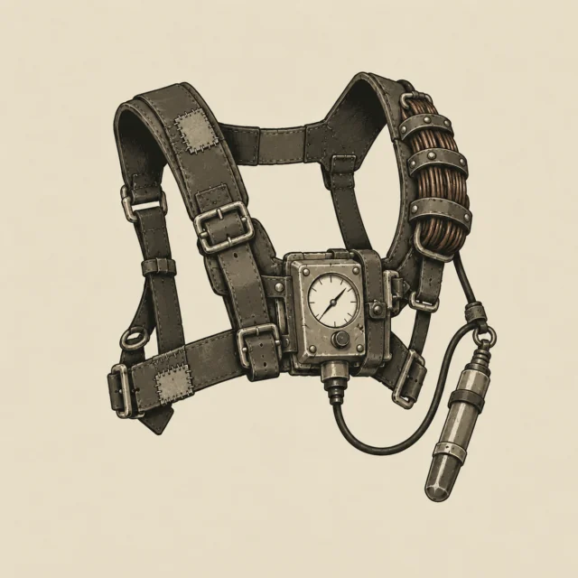 ore_sense | Salvage plates | #E8DEC8 | 2.2 | #1A160D | 8.0 | 22% | 2.4% |
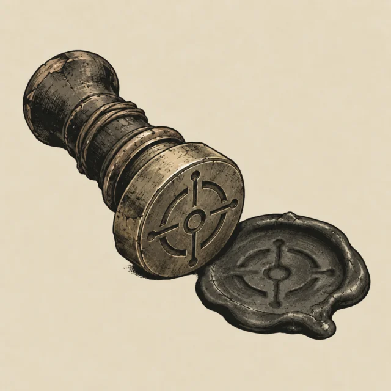 quiet_seal | Salvage plates | #E5DAC2 | 3.8 | #1A1710 | 7.3 | 25% | 6.4% |
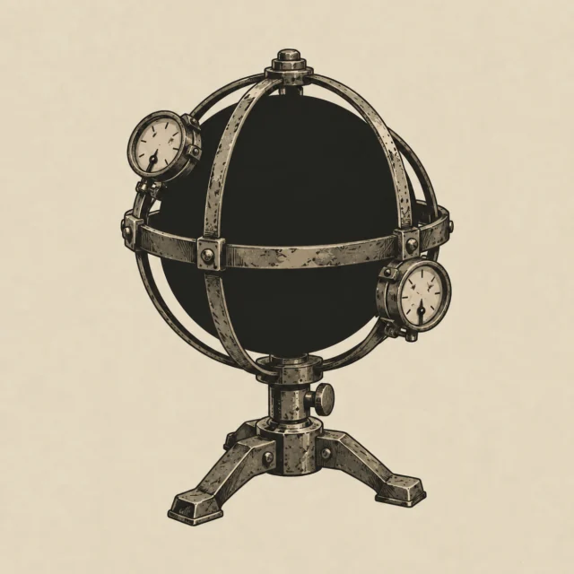 null_core | Salvage plates | #E4D8C1 | 4.1 | #221D15 | 6.2 | 23% | 1.4% |
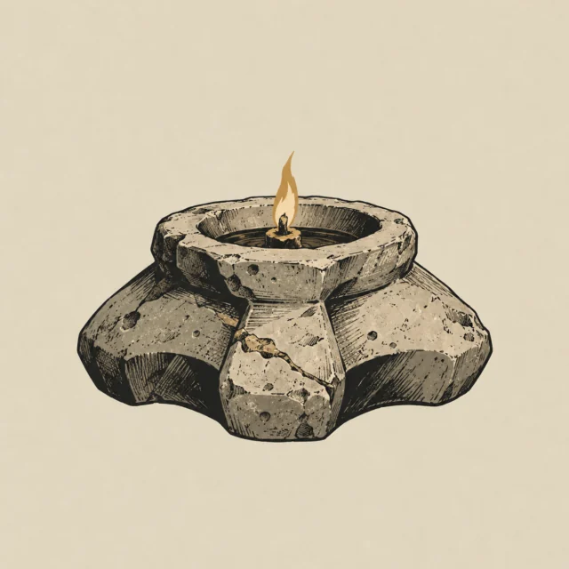 first_light | Salvage plates | #E1D7BF | 4.5 | #211E17 | 5.0 | 11% | 2.7% |
| spire_sigil (spoiler) | Salvage plates | #E5DCC4 | 3.3 | #17120B | 9.5 | 26% | 12.4% |
| telos_lens (spoiler) | Salvage plates | #E5DEC6 | 2.9 | #19140C | 8.8 | 15% | 3.3% |
| last_charter (spoiler) | Salvage plates | #E3DAC3 | 3.3 | #13100C | 10.1 | 6% | 0.7% |
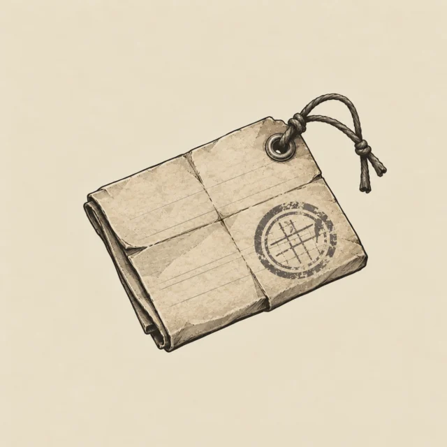 waybill | Salvage plates | #E9DFC9 | 2.0 | #2F271B | 8.3 | 5% | 1.4% |
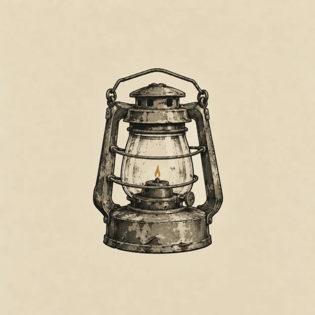 road_lantern | Salvage plates | #E6DAC0 | 4.8 | #1B1810 | 7.0 | 10% | 1.2% |
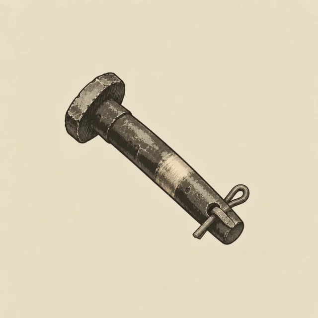 axle_pin | Salvage plates | #E8DEC5 | 3.5 | #2F271B | 8.3 | 7% | 0.9% |
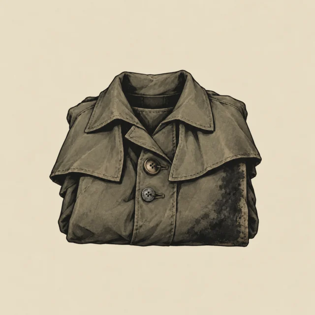 drover_coat | Salvage plates | #E7DDC5 | 3.2 | #191712 | 7.2 | 28% | 2.2% |
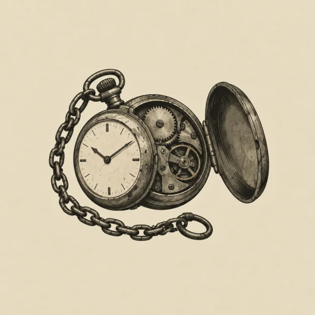 slow_watch | Salvage plates | #E7DCC2 | 4.3 | #1F1A12 | 7.0 | 16% | 2.0% |
| gate_seal | Salvage plates | #E7DDC3 | 4.1 | #241E12 | 7.7 | 16% | 2.2% |
Colour pass: before and after
Left as generated, right as shipped. Each scene's paper is matched to the camp
illustration's and, for Cinder, Blackstone and the hourglass, warm colour pulled down to
the camp's level. Ink is left where it is. See docs/design/grade.py.

mosswood · paper ΔE to camp 1.1 → 0.6 · warm 9% → 8%

blackstone · paper ΔE to camp 1.0 → 0.9 · warm 20% → 11%

cinder · paper ΔE to camp 4.7 → 0.4 · warm 29% → 10%

riftline · paper ΔE to camp 3.7 → 0.8 · warm 2% → 1%

caravan · paper ΔE to camp 5.4 → 0.4 · warm 0% → 0%

onboarding-hourglass · paper ΔE to camp 1.7 → 0.6 · warm 19% → 11%
Show the Spire (spoiler)

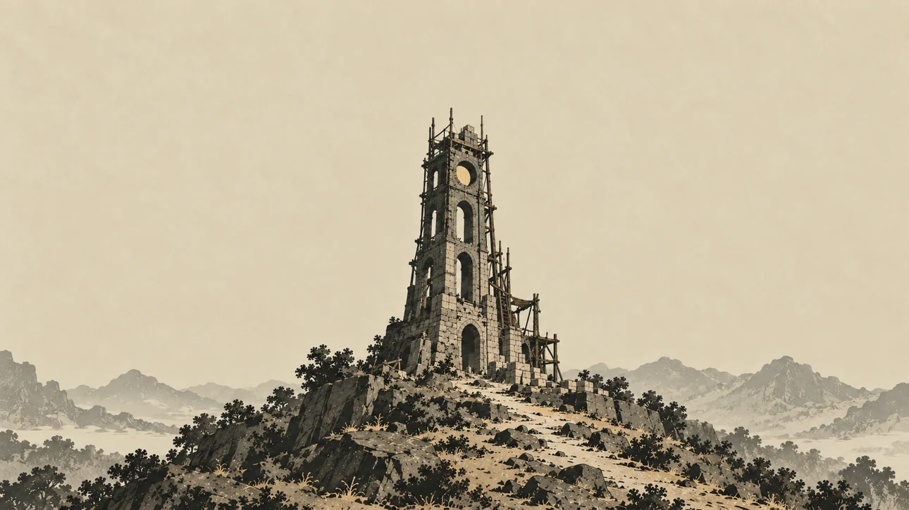
spire · paper ΔE to camp 0.9 → 0.8 · warm 5% → 5%
2 · Camp and story
camp · home, full width × 184
caravan · debrief and caravan screen
hourglass · onboarding × 160
lantern · launch, 260 × 200
3 · Sector headers
mosswood · sector sheet × 150
blackstone · sector sheet × 150
cinder · sector sheet × 150
riftline · sector sheet × 150
Show the Spire (spoiler)
spire · after unlock only
4 · Salvage plates
As the debrief and detail sheet frame them: 124px with the boundary line.
scav_cord · 124
mossglass · 124
hollow_pick · 124
ash_ledger · 124
field_optic · 124
slag_brace · 124
archivist_optic · 124
rift_anchor · 124
verge_charm · 124
deep_lamp · 124
cinder_key · 124
descent_rig · 124
ore_sense · 124
quiet_seal · 124
null_core · 124
first_light · 124
waybill · 124
road_lantern · 124
axle_pin · 124
drover_coat · 124
slow_watch · 124
gate_seal · 124
Show the three Spire pieces (spoilers)
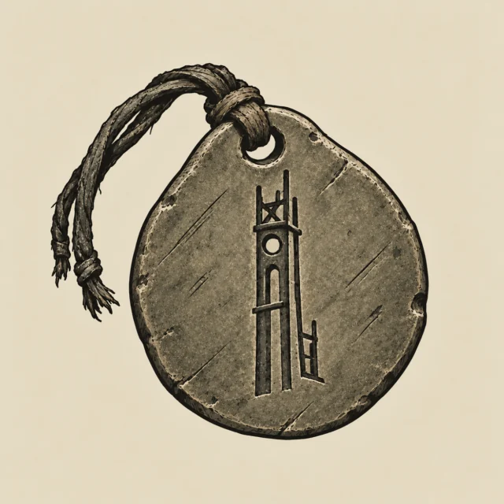
spire_sigil · 124
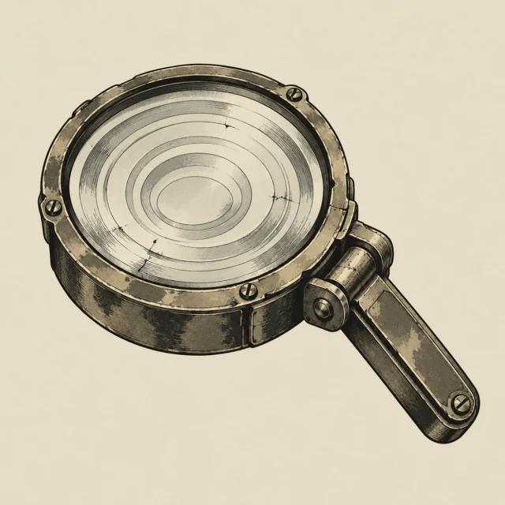
telos_lens · 124
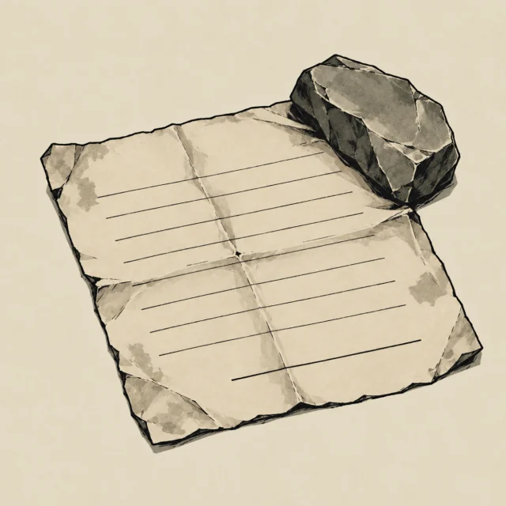
last_charter · 124
5 · Marks: plates and strokes
The plates tinted amber the way the app will draw them, above the strokes that stay below 56px. The same sign should read at both sizes.
Sector sigils

mosswood · 72

blackstone · 72

cinder · 72

riftline · 72
Show the Spire's plate (spoiler)

spire · 72
Class emblems

vanguard · 72

recon · 72

archivist · 72

artificer · 72

quartermaster · 72
Guild emblems

lantern · 88

compass · 88

branch · 88

anvil · 88
Camp marks (section headers, 23px)
6 · Line drawings that carry data
These stay drawn because they show the player's own history: stakes at the depth each run reached, and floors raised on the Spire.
Spire screen
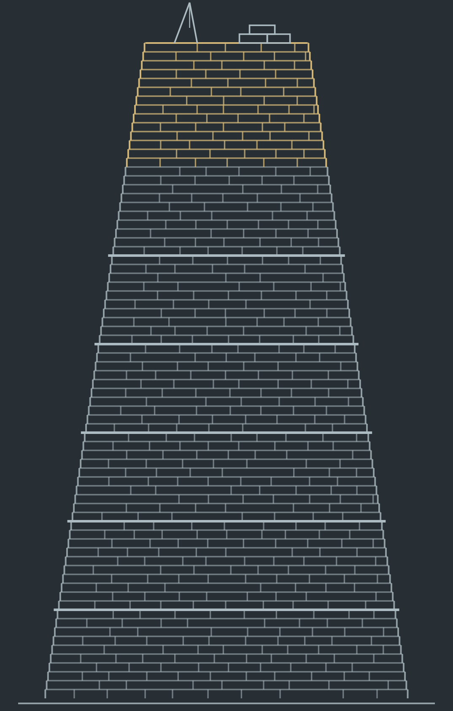
7 · Same place, two styles: the options
Today the sector sheet shows the painted header and, directly under it, the drawn scene of the same place; dispatch does the same at a smaller size. Three ways out, mocked with the real header and the real stake geometry (sample runs). Spire left out: its header is a spoiler.
A is today. B keeps the painting as the place and turns the scene into a strip of stakes: no new art, and the amber stays on charcoal where it reads. C draws the stakes on the painting: it needs new side-on paintings with a clear strip of ground for the stakes to stand on, and the stakes recoloured for paper.
Mosswood Verge
A · today: header, then the drawn scene
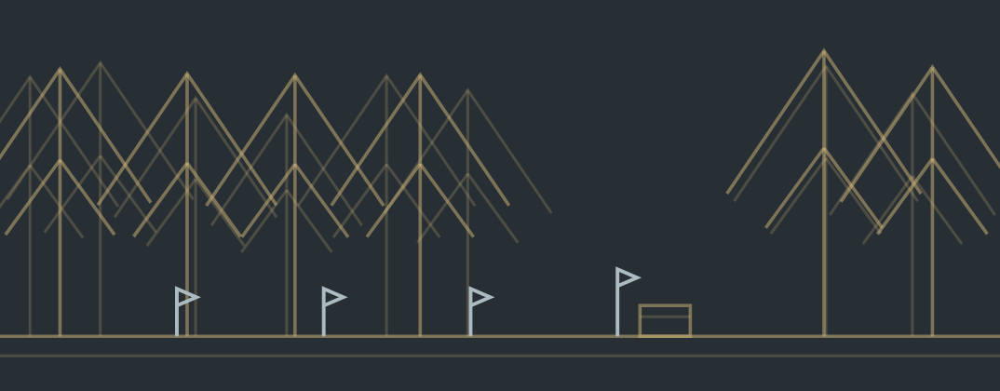
debrief, same place
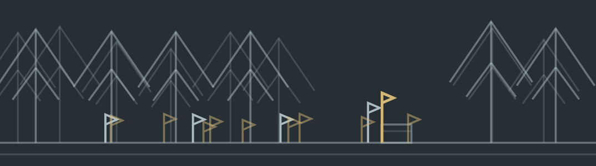
B · the painting, then the stakes as a strip
debrief: the painting is the place, the strip is the run
C · the painting as backdrop, stakes drawn on it
the same stakes in the lock's ink, for the old company's
Blackstone Hollow
A · today: header, then the drawn scene
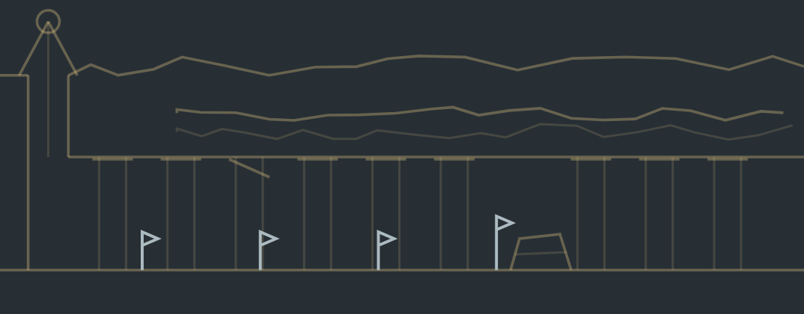
debrief, same place
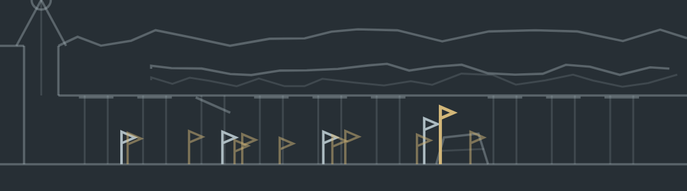
B · the painting, then the stakes as a strip
debrief: the painting is the place, the strip is the run
C · the painting as backdrop, stakes drawn on it
the same stakes in the lock's ink, for the old company's
Riftline Descent
A · today: header, then the drawn scene
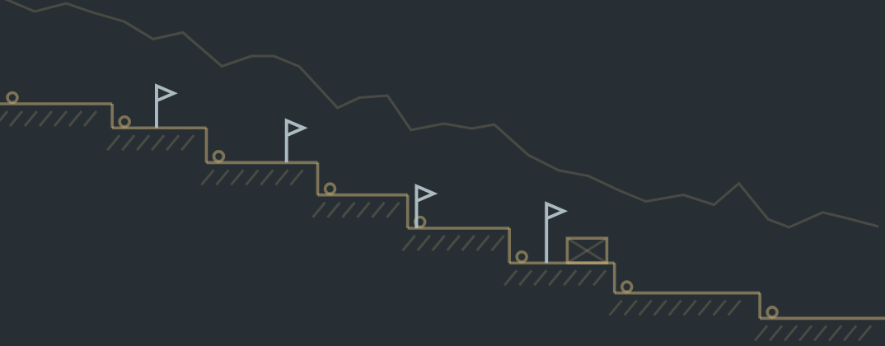
debrief, same place
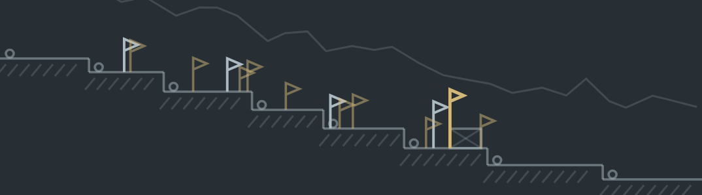
B · the painting, then the stakes as a strip
debrief: the painting is the place, the strip is the run
C · the painting as backdrop, stakes drawn on it
the same stakes in the lock's ink, for the old company's
8 · What to look for
- Paper that changes from set to set: a warmer cream here, a greyer stone there.
- Hatching density that jumps: one set sparse, the next cross-hatched dark.
- The same chipped edge or grain stamped onto everything, whatever it is.
- Backgrounds busier than the subject.
- Mushy small detail: rope, buckles, hinges, and especially marks that look like writing.
- Light from different directions in images that sit together.
- Colour past the lock: the only warm note is a small flat ochre, and only on a flame.